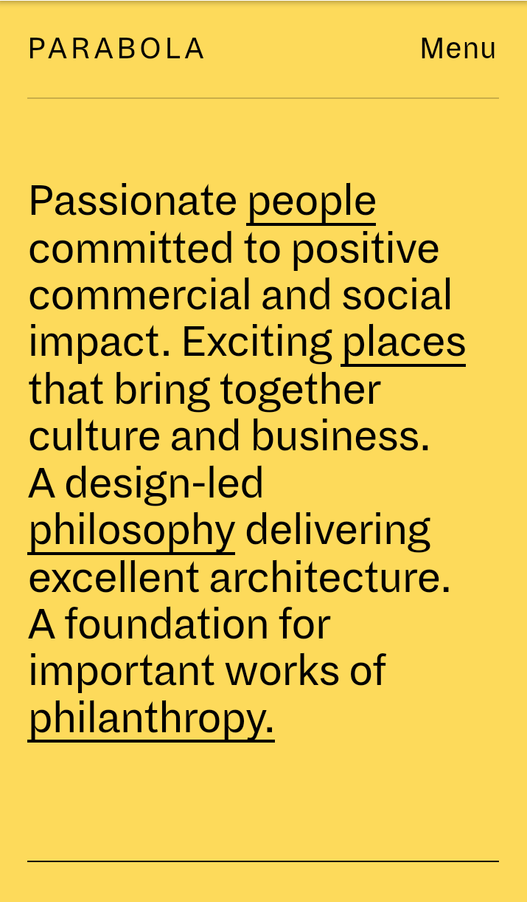
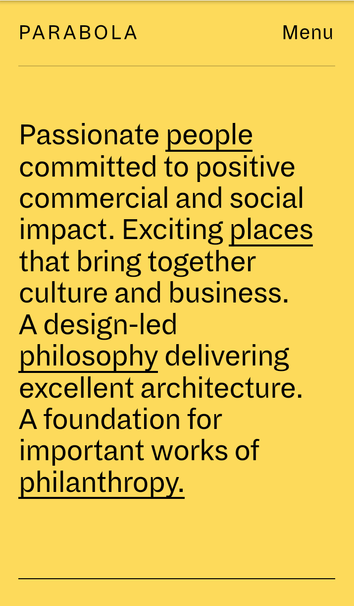
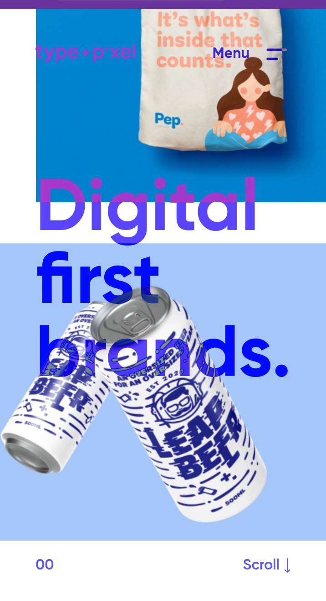

Design Principle
Otieno Paul Juma
Contrast Design Principle
Parabola
Parabola.com

Contrast refers to how different each element is designed
in particular adjacent elements.This is what makes different elements
to stand out.In this particular website called parabola.com,
The designed appears to "pop" more and it makes the website
more accessible in terms of readability especially with people with
visual impairments visiting the site.
Parabola
Parabola.com
Contrast refers to how different each element is designed in particular adjacent elements.This is what makes different elements to stand out.In this particular website called parabola.com, The designed appears to "pop" more and it makes the website more accessible in terms of readability especially with people with visual impairments visiting the site.
Visual Hierarchy
Grafills
Grafill.no

Hierachy design focuses more on the important elements or content that appear to be more relevant to the targeted audience. Elements such as titles, headings are made recognizable since they are the most important elements in a page and for that reason, they ae formatted in a way that shows their importance in relation to the entire body of the website.
Repetition Design Principle
Type and Pixel
typeandpixel
when we want to reinforce an idea we use repetiton as one of the principle design. Repetition is one of the ways to unify a design that brings together a lot of different elements together. repetiton can be done in several ways like repeating the same colors, shapes and typefaces. This particular website uses repetiton in the format of images and color to signal the veiwers that each element is equally important and they are all related.